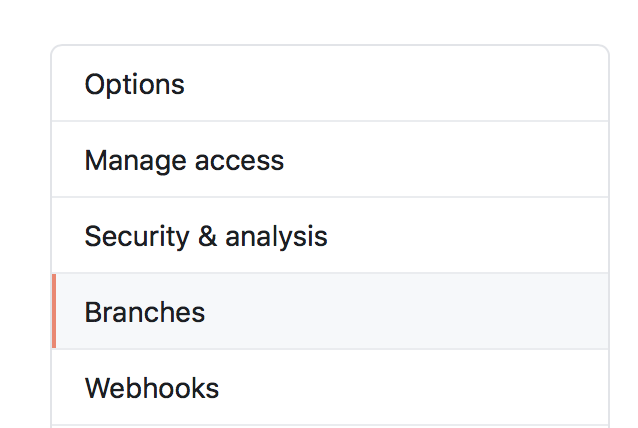
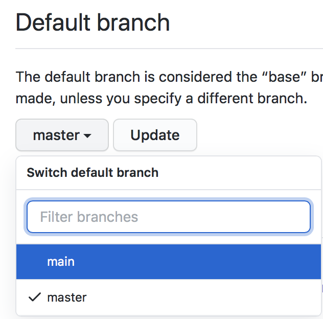

The Caltech Library software development group is in the process of updating as many of our git repositories as possible in order stop using the name master for the primary branch. We settled on the name main as the replacement. It is not yet clear every one of our GitHub repositories can be so changed, but many can. Having decide to do it, the next natural question is, how does one make the change?
After Googling for solutions, many of which go to old Stack Overflow questions with many varied answers, and reading them, and trying to understand them (made difficult by the UX horror that is git), I settled on the following procedure. It’s based in large part on a GitHub gist written by GitHub user Comevius:
Change the name of the branch in your local git repository:
git branch -m master main
Push the new branch to the origin (presumed here to be on GitHub) and simultaneously set your local copy to track origin/main instead of origin/master with the following one-line command:
git push -u origin main
Go to your repo on GitHub, click on the Settings tab across the top, then click on Branches in the left-hand list of items:

In the Branches panel, change the default branch to be main:

Now go back to your local repository copy, and type one final command to delete origin/master: